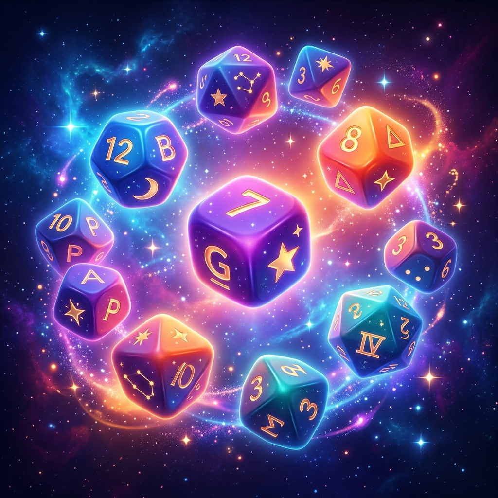

Dados Personalizados Online
O simulador de dados digital gratuito onde VOCÊ define as regras!
Por que usar nossos dados personalizados?
Nosso gerador de dados personalizados online é a ferramenta mais flexível para jogadores e professores.
Principais Características
- Totalmente Grátis : Sem necessidade de registro.
- Opções Ilimitadas : Adicione quantas faces desejar.
- Texto e Números : Números, palavras ou emojis.
- Suporte a Vários Dados : Jogue vários dados de uma vez.
- Resultados Instantâneos : Animações realistas.
Como criar seus próprios dados
- Clique em "Personalizar Dados".
- Edite ou adicione novos dados.
- Digite o texto e aperte Enter.
- Clique no "X" para remover.
- Clique em "Jogar Dados!".
Perfeito para Qualquer Ocasião
A ferramenta de dados personalizados online é ideal para:
- Jogos de Tabuleiro : Substituir dados perdidos.
- Educação : Seleção aleatória de alunos.
- Decisões : O que comer ou assistir?
- RPG : Dados especiais para suas sessões.
Perguntas Frequentes
Meus dados são salvos?
Sim! Suas configurações são salvas no armazenamento local do navegador.
Posso usar emojis?
Com certeza! Você pode colar emojis nos campos.